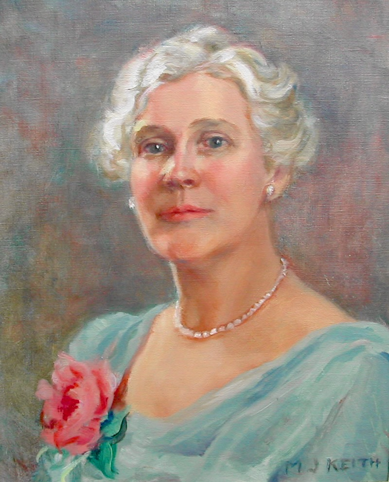

Portrait of Ella Margaret Brown (Ella Brown Henderson)
- Artist: M. J. Keith (American, active mid-20th century)
- Date: c. 1950s (posthumous; sitter lived 1868–1940)
- Medium: Oil on canvas
- Signature: Signed M J KEITH in dark pigment, lower right
- Verso Markings: Stamped "Alexander Dawson Inc." (ADI-65) property stamp
- Companion Piece: Portrait of Alexander Dawson Henderson Sr. by M. J. Keith (c. 1950s, oil on canvas, bearing matching "ADI" property stamp)
Historical & Commissioning Notes
Commissioned in the 1950s by the sitter’s son, businessman and philanthropist Girard B. "Jerry" Henderson (1905–1983), to hang alongside a companion portrait of his father, Alexander Dawson Henderson Sr. (1865–1925), in his business offices.